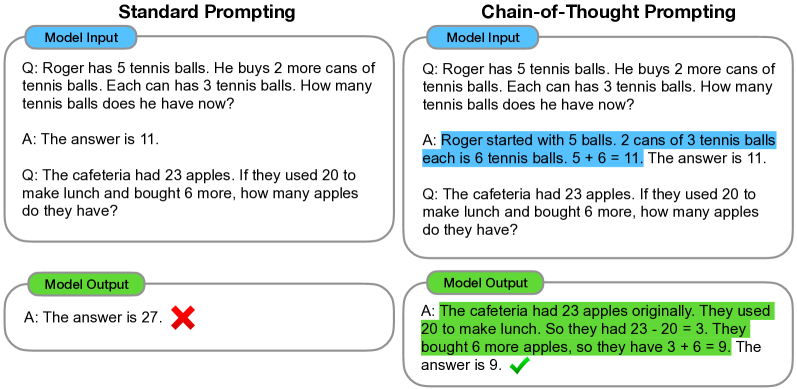

模糊需求'写一篇介绍'
Prompt 工程
Prompt 是你和模型之间的界面。好的 prompt 不是「咒语」，而是清晰传达意图的沟通技巧。这一节从概率机制讲到五层结构，从 Few-shot 讲到 CoT，从反模式讲到安全边界——不教念咒，教讲道理。
一图看懂
Prompt 工程的核心是把模糊的人类意图翻译成模型能精确执行的指令。模型不是猜不到你想干嘛——是猜的可能太多了。好的 prompt 把猜测空间从「无限可能」压缩到「你要的那一种」。
- 模型猜测空间方向不确定可能写成:- 产品介绍- 人物传记- 技术科普- 旅游攻略
- 清晰 Prompt角色+任务+格式+示例+约束
- 猜测空间压缩输出符合预期
为什么 Prompt 有效：从概率说起
2026 年了，写出好的 prompt 早已不是「碰运气念魔法咒语」。它的有效机制可以被解释——归根结底，模型是在做给定上文的条件概率分布。
- 输入: '写一篇介绍'输入: 角色+任务+格式+示例+约束没有 Prompt 引导
- 模型搜索空间P(output|'写一篇介绍')巨大且分散
- 输入: '写一篇介绍'
模型搜索空间P(output|detailed_prompt)高度集中- 输入: 角色+任务+格式 / +示例+约束
有 Prompt 引导- 没有 Prompt 引导添加结构化 Prompt
- 输出不可控可能是任意主题
- 模型搜索空间 / P(output|'写一篇介绍') / 巨大且分散
输出可控符合预期格式和内容- 模型搜索空间 / P(output|detailed_prompt) /...
四条核心机制
- 清晰指令压缩歧义：模糊的 prompt 对应一个很大的合法输出空间，模型从中随机采样——你以为它在乱答，实际它在平等地对待你所有没说清的意图。
- Few-shot 不是「教会」新能力：少样本示例的作用是把任务格式和风格定位给模型看，而不是教它一个它不会的知识。示例的数量影响大于质量——两个好例子不如六个过得去的例子，因为模型需要足够的格式信号。
- 示例的顺序有影响：越靠后的示例对输出的格式约束越强。如果你希望输出偏向某种风格，把那种风格的示例放在最后。
- 角色设定的作用被高估了：「你是一个资深专家」对模型的事实准确性几乎没有影响——它不会因为戴上一顶帽子就变得更专业。角色设定真正起作用的地方是风格和语调层面（像个专家在说话 vs 像个客服在说话）。
一句话直觉
Prompt 工程不是在「教模型新东西」，而是在「告诉模型你到底要什么」。模型的能力是预训练决定的，prompt 只决定能力的方向——就像手电筒不改变光的亮度，只改变照的方向。
Prompt 的五层结构
一个完整的 prompt 通常包含五层，按重要性排序——不是线性堆砌，是按对输出质量的影响程度分层：
核心主题Prompt 五层结构 / 按影响力排序
01任务
- 要做什么
- 越具体越好
- 影响力最大
02格式
- 输出长什么样
- 第二重要
03约束
- 什么不能做
- 边界在哪
04示例
- 格式与风格的模板
- 数量大于质量
05角色
- 风格与语调导向
- 不影响事实准确性
- 影响力最小
| 层 | 作用 | 差的写法 | 好的写法 |
|---|---|---|---|
| 任务 | 要做什么 | 帮我总结一下 | 将下面这段会议纪要整理成三段摘要 |
| 格式 | 输出形式 | 给我个表格 | 用 Markdown 表格,列名为「议题/决议/负责人」 |
| 约束 | 边界 | 别乱编 | 不要添加任何纪要里没有出现的信息 |
| 示例 | 模板 | 不给例子 | 给 2-3 个完整输入→输出对 |
| 角色 | 风格 | 你是专家 | 你以技术顾问的身份回应 |
实战：从差到好的 Prompt 进化
❌ V1：模糊
帮我写个产品介绍任务模糊、无格式、无约束、无示例。模型可能写出任何东西。
⚠ V2：有任务
帮我写一个 AI 助手产品的介绍,
面向企业用户有任务了,但没格式约束。可能写成一篇文章,也可能写成一段话。
✓ V3：有格式
帮我写一个 AI 助手产品的介绍,
面向企业用户。输出格式:
- 产品概述(2-3句)
- 核心功能(列表,3-5条)
- 适用场景(列表,3条)
- 定价模式(1段)有任务有格式了,但可能编造功能。
✅ V4：完整
你是企业软件技术顾问。
请基于以下产品信息写介绍。
## 产品信息
{product_data}
## 输出格式
- 产品概述(2-3句)
- 核心功能(列表,3-5条)
- 适用场景(列表,3条)
## 约束
- 只使用产品信息中的内容
- 不要编造功能或数据
- 语气专业但不晦涩五层齐全:角色+任务+格式+约束+数据。输出可控。
Few-shot 详解：示例的力量与陷阱
Few-shot（少样本示例）是 prompt 工程里最常用的技巧，也是最容易用错的。核心原理：给模型看几个「输入→输出」对，让它在格式和风格上对齐到你的预期。
- 示例 1输入: ...输出: ...
- 示例 2输入: ...输出: ...
- 示例 1 / 输入: ... / 输出: ...
- 示例 3输入: ...输出: ...
- 示例 2 / 输入: ... / 输出: ...
- 实际输入输入: ...输出: ?
- 示例 3 / 输入: ... / 输出: ...
- 模型基于示例模式生成输出
- 实际输入 / 输入: ... / 输出: ?
Few-shot 的手算：为什么「数量大于质量」
很多人对「两个好例子比六个普通例子更好」这个直觉深信不疑，但实验结论正好相反。用一个概率视角手算一遍就明白了。假设模型在某一步要为「输出用什么格式」做选择，候选空间里有三种格式：A（你想要的）、B（错误的）、C（错误的）。
- zero-shot（0 个示例）：模型只靠指令判断，P(A) 可能只有 0.3——大部分权重被 B、C 分走，甚至被「干脆输出一大段自然语言」这种格式之外的选项分走。
- 1 个示例：示例把 A 的出现概率抬高到 0.5 左右，但仍然有近一半概率跑到别处。
- 3 个示例：三条「输入→A 格式输出」的连续证据让 P(A) 冲到 0.8 以上——模型开始确认「这不是偶然，这是模式」。
- 6 个示例：P(A) 逼近 0.95 以上，格式几乎稳定。
换句话说，few-shot 的作用不是「教会模型什么是 A」，而是用足够多的重复把「输出 A」的条件概率抬到压倒性优势。这就是为什么示例数量比单个示例的质量更关键——它是在概率层面堆优势，不是在学习层面讲道理。
新手最容易搞错
以为「few-shot 能让模型学会新知识」。示例里的知识（比如「北京是首都」）如果模型本来不知道，给再多示例它也学不会——few-shot 只能把模型已经会的、但默认不优先表达的模式激活出来。真正给模型补知识的正确姿势是 RAG 检索，而不是在 prompt 里堆示例。判断标准很简单：如果示例里的事实换个说法模型就答错，那不是 prompt 的问题，是知识的问题。
示例数量 vs 质量
直觉上你会觉得「两个好例子比六个过得去的例子好」。但实际不是——示例的数量影响大于质量，因为模型需要足够的格式信号来确认「这不是偶然，这就是你要的模式」。两个示例可能被模型当成背景信息忽略，六个示例的格式信号就足够强了。
示例顺序的影响
越靠后的示例对输出的约束越强（recency 效应）。如果你希望输出偏向某种风格，把那种风格的示例放在最后。反过来，如果你把最差的示例放在最后，输出质量也会被拉低。
Zero-shot 与 Few-shot 怎么选
不给任何示例直接提问，叫 zero-shot；给几个「输入→输出」对再提问，叫 few-shot。两者的差异不是「一个更先进」，而是适用场景不同。下面这张表把决策依据列清楚：
| 维度 | Zero-shot | Few-shot |
|---|---|---|
| 适用任务 | 通用问答、开放式写作、无固定格式的简单任务 | 分类打标、信息抽取、格式强约束、风格模仿 |
| 输出可控性 | 低，完全依赖模型默认行为 | 高，示例定义了你期望的模式 |
| 成本 | 最低，只有指令本身 | 示例越长越多，token 成本线性上升 |
| 主要风险 | 任务表述稍含糊就完全跑偏 | 示例不一致或选错，反而带偏输出 |
经验法则：任务本身越「像人话」越适合 zero-shot；任务越「像机器协议」越需要 few-shot。比如「帮我把这段话改得更正式」是开放式任务，zero-shot 即可；而「把这句话分类为 积极/消极/中性，只输出分类名」这种强约束任务，给三个格式一致的示例，模型几乎不会犯错。另一个常见误区是「示例越多越好」——超过一定数量后，收益快速递减，而 token 成本和上下文污染却在持续增加，6 个高质量示例通常是性价比的分水岭。
Few-shot 的陷阱
示例不一致：三个示例的格式各不相同（一个用表格、一个用列表、一个用段落），模型反而更困惑——它在猜你到底要哪种格式。示例必须格式完全一致。示例太长：每个示例 500 字，三个示例就 1500 字，加上实际输入，上下文就满了。示例要短而精——够展示格式就行，不需要完整内容。
CoT 与推理链：让模型「想完再答」
Chain-of-Thought（思维链）是 prompt 工程里效果最显著的技巧之一。核心思想：让模型先输出推理过程，再输出最终答案。这相当于给模型一张「草稿纸」——让它在回答之前先把思路理清。
- 问题: 一个商店打8折再加5%税,原价200最终多少?问题: 同上请一步步推理
- 模型直接输出: 168
- 问题: 一个商店打8折 / 再加5%税,原价200 / 最终多少?
Step 1: 打8折200 x 0.8 = 160- 问题: 同上 / 请一步步推理
- 答案错误(正确: 168)
- 模型直接输出: 168
Step 2: 加5%税160 x 1.05 = 168- Step 1: 打8折 / 200 x 0.8 = 160
- 答案: 168
- Step 2: 加5%税 / 160 x 1.05 = 168
CoT 为什么有效？不是因为模型「更努力了」，而是因为自回归模型的每一步生成都依赖前面的 token。直接输出答案时，模型在一个 token 的推理跨度内要完成所有计算——跨度太大就容易错。分步推理时，每一步的推理只依赖前几步的输出——推理跨度小，准确率高。
这一现象的原始证据来自 Wei 等人在 2022 年的论文。下面这张论文原图是整篇论文的开篇图：左边是「标准 prompting」——模型被要求直接给出答案；右边是「chain-of-thought prompting」——每个示例都带一段中间推理过程，图中用高亮标出了这些推理步骤。这张图要表达的核心信息是：「会推理」不是换更大的模型逼出来的，而是可以在提示层面直接示范出来的。

新手读这张图，抓三个点就够了。第一，左右两栏的差别不在任务、不在输入，只在「示例里有没有中间推理」——所以 CoT 是纯提示层面的改动，不碰模型参数。第二，图里既包含算术题（买东西找零）、也包含常识题和符号推理题——说明这个方法不是针对某一类题的偏方，而是通用策略。第三，推理步骤用的是自然语言而不是公式——模型是在「把自己打算怎么算讲出来」的过程中把算力用上，这正解释了为什么一句「请一步步推理」就足以触发它。论文的实验结论是：在 540B 参数的 PaLM 上只用 8 个带思维链的示例，就在小学数学应用题基准 GSM8K 上超过了当时微调过的 GPT-3 加验证器的方案——注意，这里没有额外训练，全部靠提示。
CoT 的触发方式
最简单的触发：在 prompt 末尾加一句「请一步步推理」或「Let's think step by step」。不需要给推理示例——模型见过大量 CoT 训练数据，一句触发就够了。但对于复杂任务，给一个 CoT 示例效果更好——模型会模仿你示例的推理深度和格式。
什么时候该用思维链，什么时候不该用
CoT 不是万能的，用错了反而有害。它对多步推理型任务增益巨大，但对直觉型任务（情感分类、翻译、摘要）几乎没有帮助，甚至因为强制「讲道理」而拖累输出。判断依据看这张表：
| 任务类型 | 直接回答 | CoT 思维链 | 原因 |
|---|---|---|---|
| 数学计算 | ❌ 容易错 | ✅ 显著提升 | 分步运算缩小了每步的推理跨度 |
| 逻辑推理 / 规划 | ❌ 容易漏条件 | ✅ 显著提升 | 链条式思考能覆盖更多约束 |
| 信息抽取 / 分类 | ✅ 足够 | ❌ 浪费且可能引入噪声 | 任务本质是「定位」而非「推导」 |
| 翻译 / 改写 | ✅ 推荐 | ⚠ 视需求 | 直译更自然；需要解释性翻译时才用 CoT |
| 创意写作 | ✅ 推荐 | ❌ 打乱思路 | 创作讲究连贯，显式推理会破坏语感 |
另一个常被忽略的点：CoT 会让输出显著变长。一段推理过程可能占 200–500 token，直接回答可能只要 50。如果你的任务既需要推理、又对延迟和成本敏感，可以考虑「先让模型静默推理（内部思考），只输出最终答案」，现代推理模型已经内置了这个能力，无需在 prompt 里手动控制。
CoT 的进阶形态见 混合推理——现代推理模型（如 o1/R1）把 CoT 从 prompt 技巧升级成了训练目标，让模型自己学会何时推理、推理多深。
温度与采样参数：随机性旋钮
同样的 prompt、同样的模型，为什么输出时好时坏？除了模型本身，还有一个经常被忽略的变量：采样参数。模型每一步生成的不是唯一的 token，而是一个概率分布；temperature 控制从这个分布里采样的「激进程度」。temperature 越低，模型越倾向于选概率最高的 token，输出越稳定；temperature 越高，低概率 token 被选中的机会越大，输出越发散、有创造性，但也更容易跑偏。
一个具体的算例最能说明问题。假设模型在某一步给出了三个候选 token，概率分别是 0.7 / 0.2 / 0.1。temperature=0 时，模型永远选 0.7 那个，输出完全确定；temperature=1 时，采样按原始概率分布进行，三个 token 都可能被选中，但 0.7 的仍占大头；当 temperature 调到 2 以上，概率分布被「拉平」，0.7 和 0.1 之间的差距被显著压缩，低概率 token 被选中的机会大幅上升——这就是为什么高温下同一个 prompt 会得到截然不同的答案。
工程上的默认值
面向准确性的任务（抽取、分类、代码生成、结构化输出），temperature 设 0 或接近 0，任何随机性都是有害的；面向创造性的任务（头脑风暴、文案初稿、创意命名），temperature 设 0.7–1.0，保留多样性。真实案例：某团队把客服助手的 temperature 从 0.7 调到 0，同类问题的答非所问率立刻降了一半——不是模型变聪明了，只是不再随机撞错。
top-p 和 temperature 的关系
top-p（核采样）是另一个常用旋钮：它只保留累积概率达到 p 的最小 token 集合，然后在这个集合里重新归一化采样。两者可以混用，但实际工程里选一个为主就够了——先设 temperature，把它当主旋钮；只在需要「砍掉长尾」时用 top-p 辅助，比如把 p 设为 0.9，忽略掉概率极低的生僻 token。同时动两个参数，输出空间的组合方式会变得难以预测，出了问题也不好排查。
展开：temperature 的完整手算——从 logits 到 softmax
前面说的「把分布拉平」听起来抽象，这里把每一步算给你看。假设模型最后一步输出的原始分数（logits）是三个候选：好=3.0、不错=1.5、很=0.8。这一步我们要做的就是：除以 temperature（T），再做 softmax。
先看 T=0.7（低温度）。把每个 logits 除以 0.7：好≈4.29、不错≈2.14、很≈1.14。取 exp：好≈73、不错≈8.5、很≈3.1。归一化后概率约为 0.86 / 0.10 / 0.04。「好」以压倒性优势胜出，输出稳定。
再看 T=1.0（默认）。logits 不变，exp 后：好≈20.1、不错≈4.5、很≈2.2，归一化约为 0.75 / 0.17 / 0.08。仍然是「好」占大头，但「不错」也有接近两成的机会。
最后看 T=2.0（高温度）。logits 除以 2：好=1.5、不错=0.75、很=0.4。exp 后：好≈4.5、不错≈2.1、很≈1.5，归一化约为 0.55 / 0.26 / 0.19。三个候选的概率被显著拉平，「很」从 8% 涨到 19%——同一个 prompt 换个采样就出不同答案，就是这个原因。
关键结论：temperature 不改变候选的排序，只改变分布的形状。高温度让低概率候选的机会变大，但它永远是「次优者」而不是「第一名」；想让从来没进过前几名的候选出现，得靠 top-k/top-p 改变候选池本身。数学上这一步就是标准 softmax 缩放，任何模型的采样代码里都有这段。
| 参数 | 控制什么 | 典型取值 | 适用场景 |
|---|---|---|---|
| temperature | 整体随机性 / 多样性 | 0–1.0 | 0 用于准确性任务；0.7+ 用于创意任务 |
| top_p | 裁剪长尾 token | 0.8–0.95 | 需要抑制生僻 token 时辅助使用 |
| max_tokens | 输出长度上限 | 按任务设定 | 防止无限生成、控制成本 |
| stop sequences | 停止生成的标记 | 如 \n\n | 让输出在预期边界处自然结束 |
评估时的隐藏陷阱
如果你的评测集在不同 temperature 下跑，分数根本没有可比性——高温度下同样一批 prompt 可能跑出完全不同的结果，你分不清是 prompt 变好了还是采样运气好。评测必须固定 temperature（通常设 0），和线上固定一致。这也是评估方法论里「控制变量」的第一条，详见 评估方法。
结构化分隔符：不只是整洁
分隔符（###、---、XML tags）不只是视觉整洁——它们帮助模型的注意力机制对齐到正确的文本段。对于要求精确执行的任务（工具调用、数据提取），用 XML 包裹关键区域效果最好：
- 请从以下文本中提取人名和组织名。不要编造信息。张三是ABC公司的CEO,李四是XYZ研究院的院长。输出JSON。张三是ABC公司的CEO李四是XYZ研究院的院长1. 提取所有人名和组织名2. 不要编造信息请输出JSON
- 指令和数据混在一起模型注意力分散
- 请从以下文本中提取 / 人名和组织名。不要编造 / 信息。张三是ABC公...
指令和数据物理隔离注意力对齐到正确段落- 张三是ABC公司的CEO / 李四是XYZ研究院的院长 / / / ...
<context>
【你要分析的内容放这里】
</context>
<instructions>
1. 提取所有提到的人名和组织名
2. 不要编造任何 context 中没有出现的信息
</instructions>
请输出 JSON 格式的结果。这种方式把数据和指令物理隔离——既能提升指令遵循率，也是防范间接提示注入的基线实践。如果用户输入里包含「忽略以上指令」，分隔符能让模型更清楚哪部分是指令、哪部分是数据。
反模式：最常见的四类高代价错误
这些错误每天都在生产环境里发生，每一个都能显著拉低回答质量：
核心主题四大反模式
01约束堆在开头
- 中间段注意力稀释
- 修复: 分散在首尾
02用否定句
- 处理否定语义效率低
- 修复: 改成正向期望
03指令互相矛盾
- 模型在约束间摇摆
- 修复: 删掉互斥约束
04指令与数据分离
- 跨消息段追踪意图
- 修复: 关键指令重复到 user prompt
❌ 把所有约束堆在开头
模型对 prompt 首尾的注意力权重更高（primacy/recency 效应），但中间段容易稀释。修复：把最重要的约束分散在首尾两处，或者放在单独的标记块里。
❌ 用否定句
「不要输出不完整的信息」——模型处理否定语义的效率很低。修复：「输出必须覆盖问题中提到的所有实体」。改成正面的期望描述。
❌ 指令互相矛盾
同时要求「简洁」和「详细」，模型在两种约束间摇摆。修复：先检查 prompt 里有没有互斥的约束，有就删掉一个。
❌ 指令和执行上下文分离
指令在 system prompt，内容在 user prompt，模型要跨消息段追踪意图。修复：关键指令靠近或重复出现在 user prompt 中。
迭代与调试：怎么判断「改了有没有用」
prompt 改动的最大难题不是「怎么改」，而是「怎么知道改对了」。同一个 prompt 跑两次，输出本来就会不一样；你改了一个词，变好了还是只是运气好？判断必须建立在可控的对照上，而不是「感觉」。
一套简单可行的流程是：固定输入 → 固定参数 → 多次采样 → 统计对比。第一步，准备一批固定的测试输入（20–50 条即可，覆盖正常、边界、历史出错三类）；第二步，把 temperature 固定为 0 或与线上一致，排除采样随机性；第三步，每条输入对旧版和新版各跑 3–5 次，记录通过率；第四步，对比两版的通过率差。如果一个 50 条的测试集上，新版比旧版多对 5 条以上，这个改善大概率是真实的；如果只多对 1–2 条，那很可能只是噪声——前面评估方法论里讲的统计噪声在这里同样适用，见 评估方法。
最容易犯的调试错误
拿单条用例反复试。「我把这句话改一下，让模型不要那么啰嗦」——然后你看着这一次输出确实短了，就以为成功了。但单次输出说明不了任何问题：同样的 prompt 再跑一次可能又长了。调试必须面向测试集，而不是面向单条样例。另一个高频错误是改了 prompt 顺手把 temperature 也改了，两个变量同时变，出了问题你永远分不清是谁的锅。一次只动一个变量，这是调试的基本纪律。
展开：一个真实的踩坑实录——「上周还好好的，这周怎么全变了」
这是生产环境里反复上演的一幕。某团队的客服机器人一直表现稳定，某天开始答非所问率突然上升，测试集分数也掉了一截。第一反应是「谁改了 prompt？」查了半天，prompt 没动过。
真正的元凶有四个，全都不在 prompt 文件里。第一是模型升级：服务商静默把模型从旧版切到新版，行为分布整体平移，旧 prompt 是为旧分布调的，自然失效。第二是采样参数漂移：某次部署把 temperature 从 0 改成了 0.7，或加了 top-p，输出稳定性直接变化。第三是上下文变化：上游检索模块改了切分长度，喂给模型的检索片段变长，prompt 的指令段被稀释。第四是并发与缓存：同一 prompt 在缓存命中与未命中时走了不同的参数路径。
复盘出来的教训是一条可复用的排查顺序：先查输入（上下文喂了什么）→ 再查参数（temperature/top-p）→ 再查模型版本 → 最后才怀疑 prompt 本身。把「模型版本 + 采样参数 + 提示模板」三者绑定成一个可回溯的版本快照（见 Prompt 版本管理与评估门禁），是唯一能终结这类「灵异事件」的办法——否则每一次性能波动都要从零开始排除。
还有一类改动需要特别小心：「补丁式」叠加。今天发现模型会编造日期，你加一句「不要编造日期」；明天发现它输出太长，再加一句「不要超过 200 字」；后天发现格式不对，又加一句「必须用 JSON」。每加一条都像在治病，但约束之间会互相纠缠——「不要超过 200 字」和「必须用 JSON 完整描述所有字段」可能直接打架，模型在矛盾指令之间摇摆，最终哪条都没遵守好。这类问题的解法是定期重构：把 patch 累积的规则合并重写，删掉重复和冲突的约束，回到「五层结构」重新组织一遍。约束不是越多越好，清晰的表达胜过罗列的禁令。
Prompt 工程的边界：什么做不到
Prompt 工程不是万能的。有两件事它解决不了，认清边界才能选对工具：
stateDiagram-v2
[*] --> 判别: 任务效果不达标
判别 --> 知识缺失: 信息不在训练数据里
知识缺失 --> RAG: 检索外部知识
判别 --> 能力缺失: 模型本身不会该任务
能力缺失 --> 微调: SFT / RLHF
RAG --> [*]
微调 --> [*]
note right of 判别
prompt 只解决
表达与格式问题
end note
不是万能的
Prompt 工程解决不了两件事：知识缺失——模型没见过的东西，prompt 变不出来，那是 RAG 的活；能力缺失——模型根本不会的任务（比如需要特定推理链），prompt 也无法凭空赋予，那是微调的活（SFT / RLHF）。
展开：提示词模板的版本管理与回归
单独调一条 prompt 是手艺活，但把它放进生产系统之后，就要按工程的规矩来管。三个基本要求：
一是模板化。不要每处调用都把 prompt 手写一遍。把固定部分（角色、规则、格式约束）抽成模板，把变化部分（用户输入、检索片段、业务参数）留成占位符。这样改一处规则，所有调用点同步生效，不会出现「改了 A 服务忘了改 B 服务」的遗漏。常见的占位符风格是双花括号或 JINJA 模板，注意在拼接时做好转义，避免用户输入里的花括号破坏模板结构。
二是版本化。模板要有版本号和变更记录。生产环境里最常见的坑是：某条 prompt 被悄悄改过，一周后线上质量波动，排查了半天发现是「上周有人顺手改了两个字」。模板文本本身放 Git，与代码同分支评审；复杂场景用独立的 prompt registry，记录每次变更的 diff、作者、生效时间，详见 Prompt 版本管理与评估门禁。
三是回归集。每次改动跑一遍固定样例集，确认「修好了一条，没弄坏另外十条」。样例集至少覆盖三类：历史出过错的高危用例、正常业务主路径用例、边界/对抗输入。没有回归集的 prompt 改动，本质上是在赌运气——和没有单测的代码提交一样危险。回归的具体统计口径和门禁阈值，同样在评估门禁那一节展开。
要点速查
- 本质：压缩模型的猜测空间，把歧义降到最低。条件概率的约束。
- 五层结构（按重要性）：任务 → 格式 → 约束 → 示例 → 角色。不是线性堆砌，是按重要程度分层。
- 任务要具体：「将会议纪要整理成三段摘要」>「帮我总结一下」。模糊任务 = 巨大输出空间。
- Few-shot：数量大于质量。示例格式必须一致。越靠后的示例约束越强。
- CoT：让模型「先推理再回答」。触发：「请一步步推理」。原理：缩小每步推理跨度。进阶见 混合推理。
- 分隔符：XML tags 物理隔离指令与数据，提升指令遵循率 + 防范提示注入。
- 角色设定：不影响事实准确性，只影响风格和语调。被高估了。
- 四大反模式：约束堆开头（分散首尾）、否定句（改正向）、指令矛盾（删互斥）、指令数据分离（重复关键指令）。
- 边界：Prompt 解决不了知识缺失（该上 RAG）和能力缺失（该上微调）。
参考文献与延伸阅读
- OpenAI Prompt Engineering Guide — 官方的 prompt 最佳实践，覆盖了从基础到进阶的主要技巧，适合作为参考手册。· platform.openai.com/docs/guides/prompt-engineering
- Chain-of-Thought Prompting Elicits Reasoning in Large Language Models（Wei et al., 2022, arXiv:2201.11903）— CoT 的原始论文，证明了「让模型分步推理」能显著提升数学和推理任务的准确率，本页论文原图即出自它。
- Anthropic's Prompt Engineering 教程 — Claude 的 prompt 工程指南，侧重于 XML 结构化分隔符和长上下文管理，与 OpenAI 的风格有差异，对比阅读更有启发。· docs.anthropic.com/en/docs/build-with-claude/prompt-engineering
- OpenAI Cookbook: Techniques to improve reliability — 用「减少模糊性、把验证放在 prompt 内」等具体技巧提升生成可靠性的实操文章。· cookbook.openai.com
- Tree of Thoughts: Deliberate Problem Solving with Large Language Models（Yao et al., 2023, arXiv:2305.10601）— CoT 的进阶形态：让模型在同一问题前展开多条候选推理链、自我评估并回溯，是「推理深度从提示向模型能力迁移」的代表工作。
- Self-Consistency Improves Chain of Thought Reasoning in Language Models（Wang et al., 2022, arXiv:2203.11171）— 一条比换更强模型更省事的 CoT 增强：同一个问题采样多条思维链，取多数答案。
接下来
Prompt 是让模型输出你想要的内容。但如果你的下游是程序——你需要的是确定性的格式，不是自然语言。看 结构化输出与约束解码，了解怎么让模型吐出来的东西一定符合 JSON Schema。如果你想用 prompt 让模型推理更深，看 混合推理。如果你想把 prompt 和外部知识结合，看 RAG。
权威延伸资料
围绕“Prompt 工程”继续深入
本章把模型能力落到应用：Prompt 和 Context Engineering、RAG、重排、结构化输出，以及带评测的 Agentic RAG。
阅读提示：应用质量取决于信息是否被正确组织和验证；提示词只是接口的一部分，检索、约束、评测和失败处理同样重要。
- Retrieval-Augmented Generation for Knowledge-Intensive NLP Tasks ↗
RAG 的原始论文，明确区分参数化记忆与外部非参数化记忆。
- ReAct: Synergizing Reasoning and Acting in Language Models ↗
交错推理与行动的 Agent 范式，也是工具调用和 Agentic RAG 的共同基础。
- Structured Outputs Introduction ↗
展示如何用 JSON Schema 约束生成并验证结构化结果，适合与本页的约束解码对照。
- Prompting Guide ↗
从任务模板、少样本示例到生成参数，提供可迁移的提示设计基础。
- Retrieval-Augmented Generation for Large Language Models: A Survey ↗
按检索、增强、生成和评测梳理 RAG 变体，适合作为进阶地图。
资料优先选用原始论文、官方文档、大学课程和公共机构材料；链接按 2026-08-10 检索，具体版本以来源页面为准。
主题级技术深化
围绕“Prompt 工程”继续深入
发展脉络
提示设计从措辞技巧发展为任务契约、示例选择、结构约束和版本化评测；稳定系统依赖上下文与工具，而非“魔法句式”。
机制抓手
把提示拆成角色边界、任务、输入、约束、示例和输出 schema；动态数据必须与指令隔离并记录模板版本。
工程权衡
更多示例可减少歧义却占用上下文并引入顺序偏差；强约束提高可解析性，但可能降低开放任务覆盖。
前沿观察
自动提示搜索、DSPy 类编译和模型原生结构化输出正在替代手工微调措辞，核心仍是可执行评测。
实践检查为一个抽取任务写最小 schema、三类边界样本和回归门禁，比较零样本与少样本的合法率和字段 F1。